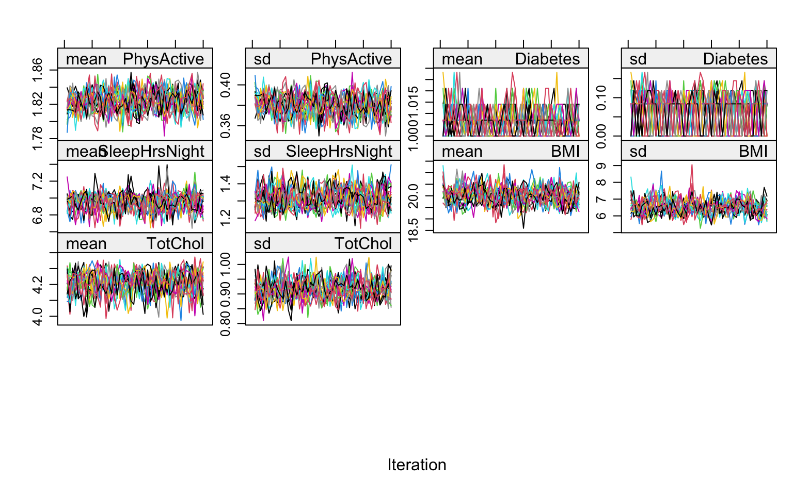
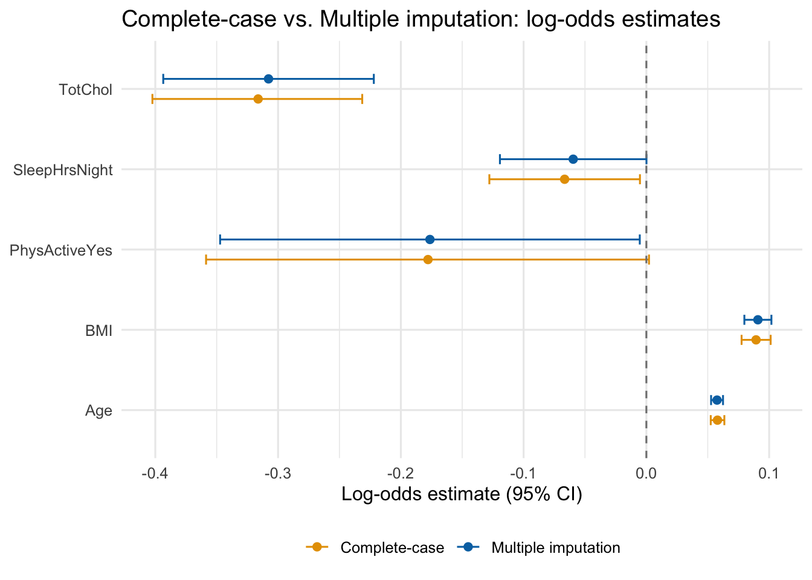

# Run this block ONCE to install all required packages.
#install.packages(c("NHANES", "mice", "naniar", "ggplot2", "dplyr",
# "broom", "gtsummary", "howManyImputations"))7 Multiple Imputation
Missing data are nearly universal in health surveys. How you handle them can substantially affect your conclusions. This session introduces multiple imputation (MI) using the mice package in R and a subset of the NHANES dataset.
The NHANES is the National Health and Nutrition Examination Survey. It is a national survey that measures the health and nutrition of adults and children in the United States. It is the only national health survey that includes health exams and laboratory tests for participants of all ages.
Research question: What factors, including age, physical activity, sleep, BMI, and total cholesterol, are associated with a diabetes diagnosis?
The outcome variable is Diabetes (Yes/No), modeled with binary logistic regression. All missing data are handled with MI.
7.1 Load Packages
library(NHANES) # NHANES demo dataset
library(mice) # multiple imputation
library(naniar) # missing-data visualisation
library(ggplot2) # general-purpose plotting
library(dplyr) # data manipulation
library(broom) # tidy model output
library(gtsummary) # publication-ready summary tables
library(howManyImputations) # von Hippel two-stage M calculation7.2 The NHANES Dataset
The NHANES package provides a 10,000-row teaching subset of the U.S. National Health and Nutrition Examination Survey. We select the variables relevant to the diabetes research question.
# Select variables for the diabetes research question
nhanes_sub <- NHANES |>
select(
Age, # age in years
PhysActive, # physically active in past 30 days (Yes/No)
Diabetes, # ever told have diabetes (Yes/No) — outcome
SleepHrsNight, # self-reported hours of sleep per night
BMI, # body-mass index
TotChol # total cholesterol (mmol/L)
)
dim(nhanes_sub)[1] 10000 6glimpse(nhanes_sub)Rows: 10,000
Columns: 6
$ Age <int> 34, 34, 34, 4, 49, 9, 8, 45, 45, 45, 66, 58, 54, 10, 58,…
$ PhysActive <fct> No, No, No, NA, No, NA, NA, Yes, Yes, Yes, Yes, Yes, Yes…
$ Diabetes <fct> No, No, No, No, No, No, No, No, No, No, No, No, No, No, …
$ SleepHrsNight <int> 4, 4, 4, NA, 8, NA, NA, 8, 8, 8, 7, 5, 4, NA, 5, 7, NA, …
$ BMI <dbl> 32.22, 32.22, 32.22, 15.30, 30.57, 16.82, 20.64, 27.24, …
$ TotChol <dbl> 3.49, 3.49, 3.49, NA, 6.70, 4.86, 4.09, 5.82, 5.82, 5.82…7.3 Complete-Case Analysis
Complete-case analysis (CCA) — deleting all rows with any missing value — is the default in most R functions. It is easy but can be biased whenever data are not MCAR.
# How many complete cases do we have?
n_total <- nrow(nhanes_sub)
n_complete <- sum(complete.cases(nhanes_sub))
cat(sprintf("Total rows: %d | Complete cases: %d (%.1f%%)\n",
n_total, n_complete, 100 * n_complete / n_total))Total rows: 10000 | Complete cases: 7264 (72.6%)# Binary logistic regression: what factors are associated with diabetes?
cca_model <- glm(
Diabetes ~ Age + PhysActive + SleepHrsNight +
BMI + TotChol,
data = nhanes_sub,
family = binomial(link = "logit")
)
summary(cca_model)
Call:
glm(formula = Diabetes ~ Age + PhysActive + SleepHrsNight + BMI +
TotChol, family = binomial(link = "logit"), data = nhanes_sub)
Coefficients:
Estimate Std. Error z value Pr(>|z|)
(Intercept) -5.902629 0.410609 -14.375 < 2e-16 ***
Age 0.057916 0.002827 20.487 < 2e-16 ***
PhysActiveYes -0.177876 0.092006 -1.933 0.0532 .
SleepHrsNight -0.066587 0.031285 -2.128 0.0333 *
BMI 0.089349 0.006039 14.794 < 2e-16 ***
TotChol -0.316239 0.043597 -7.254 4.05e-13 ***
---
Signif. codes: 0 '***' 0.001 '**' 0.01 '*' 0.05 '.' 0.1 ' ' 1
(Dispersion parameter for binomial family taken to be 1)
Null deviance: 4470.0 on 7263 degrees of freedom
Residual deviance: 3641.4 on 7258 degrees of freedom
(2736 observations deleted due to missingness)
AIC: 3653.4
Number of Fisher Scoring iterations: 67.4 Understand Missingness
The first step is to quantify how much data are missing. miss_var_summary() from naniar gives the count and percentage of missing values for every variable.
naniar::miss_var_summary(nhanes_sub)# A tibble: 6 × 3
variable n_miss pct_miss
<chr> <int> <num>
1 SleepHrsNight 2245 22.4
2 PhysActive 1674 16.7
3 TotChol 1526 15.3
4 BMI 366 3.66
5 Diabetes 142 1.42
6 Age 0 0 Note: Variables with more than ~40–50 % missing values are unlikely to be well-imputed; consider whether they are worth keeping in the model.
md.pattern() from mice provides a row-by-row breakdown of which variables are missing together. Each row is a block of participants who share the same missingness pattern; the numbers on the left count how many participants are in that block.
md.pattern(nhanes_sub, rotate.names = TRUE)
Age Diabetes BMI TotChol PhysActive SleepHrsNight
7264 1 1 1 1 1 1 0
501 1 1 1 1 1 0 1
636 1 1 1 1 0 0 2
417 1 1 1 0 1 1 1
63 1 1 1 0 1 0 2
748 1 1 1 0 0 0 3
63 1 1 0 1 1 1 1
4 1 1 0 1 1 0 2
1 1 1 0 1 0 0 3
9 1 1 0 0 1 1 2
152 1 1 0 0 0 0 4
2 1 0 1 1 1 1 1
3 1 0 1 1 1 0 2
137 1 0 0 0 0 0 5
0 142 366 1526 1674 2245 5953Note: A
1means the variable is observed for that block;0means it is missing. The bottom row gives the total number of missing values per variable, and the right-hand column gives the number of variables missing per block. The bottom-right cell is the total number of missing values across the entire dataset — note this is not the same as the number of incomplete cases, since some participants may be missing more than one variable.
A missingness heatmap (also called an aggregation plot) shows which variables tend to be missing together — a key input for building the imputation model.
vis_miss(nhanes_sub, sort_miss = TRUE) +
labs(title = "Missingness heatmap: NHANES subset") +
theme(axis.text.x = element_text(angle = 45, hjust = 1))
An upset plot highlights the most common patterns of co-missingness across variables.
gg_miss_upset(nhanes_sub)
7.5 Missing-Data Mechanisms
Understanding why data are missing guides the choice of analysis method.
| Mechanism | Abbreviation | Definition | Implication |
|---|---|---|---|
| Missing Completely at Random | MCAR | Missingness is unrelated to any variable (observed or unobserved). | Complete-case analysis is unbiased (but less efficient). |
| Missing at Random | MAR | Missingness depends only on observed variables, not on the missing value itself. | MI (and other likelihood-based methods) are unbiased. |
| Missing Not at Random | MNAR | Missingness depends on the unobserved (missing) value. | No standard method fully fixes this; sensitivity analyses needed. |
MCAR is generally unrealistic. MAR is more plausible because it allows for systematic differences as long as those differences are predictable from observed information. Under MAR (plus a technical condition called ignorability), MI produces consistent estimates with correct standard errors. Under MNAR, MI reduces bias relative to CCA but cannot fully eliminate it.
7.6 Multiple Imputation with mice
mice stands for Multivariate Imputation by Chained Equations (van Buuren & Groothuis-Oudshoorn, 2011). Rather than fitting one joint model for all variables simultaneously, it imputes one variable at a time in a chain, using all other variables as predictors. For three variables \(X\), \(Y\), \(Z\), one iteration of the chain looks like this:
- Randomly impute missing \(X\) values using the model \(X \sim Y + Z + \text{randomness}\).
- Given those predictions, impute \(Y\) using \(Y \sim X + Z + \text{randomness}\).
- Given those predictions, impute \(Z\) using \(Z \sim X + Y + \text{randomness}\).
- Repeat this chain many times until the results converge.
The key insight is that adding randomness at each step — rather than substituting the predicted mean — preserves the natural variability in the data. Doing this \(m\) times produces \(m\) complete datasets that reflect all the uncertainty introduced by the missing values.
Multiple imputation replaces each missing value with m plausible values drawn from a posterior predictive distribution, creating m complete datasets. Each dataset is analysed separately, and the results are pooled using Rubin’s rules.
7.6.1 Best Practices Before Imputing
What to include in the imputation model (Nahhas, 2024)
Include all analysis variables — both the regression outcome and all predictors — even those with no missing values. The imputation model should be at least as complex as the analysis model. Leaving out analysis variables causes the imputation to distort the relationships you are trying to estimate.
Include auxiliary variables — variables not in the regression model that are believed to relate to missingness or to the incomplete variables. Including them strengthens the MAR assumption and improves precision.
Transform before you impute — if a variable needs a transformation (e.g., log, quadratic, interaction) for the regression model, create that transformed version first and include it in the imputation model. This is called transform-then-impute. Doing it the other way (impute-then-transform) distorts the relationships between variables and leads to inconsistent estimates (von Hippel, 2009).
Do not impute impossible values. Some responses may be missing by design.
mice works best when:
- Factor variables are proper R factors (not character strings).
- Variables with near-zero variance or with more than ~50 % missing are excluded.
# Convert character variables to factors
nhanes_imp_ready <- nhanes_sub |>
mutate(across(where(is.character), as.factor))
# Inspect the class of each column
sapply(nhanes_imp_ready, class) Age PhysActive Diabetes SleepHrsNight BMI
"integer" "factor" "factor" "integer" "numeric"
TotChol
"numeric" 7.6.2 Inspect the Default Imputation Methods
Before running imputation, call mice() with maxit = 0 to preview what method it will use for each variable.
# Dry run: no actual imputation, just inspect setup
init <- mice(nhanes_imp_ready, maxit = 0, printFlag = FALSE)
# Default imputation methods chosen automatically
init$method Age PhysActive Diabetes SleepHrsNight BMI
"" "logreg" "logreg" "pmm" "pmm"
TotChol
"pmm" # Predictor matrix: 1 = variable in column is used to impute variable in row
# (showing first 6 variables for readability)
init$predictorMatrix[1:6, 1:6] Age PhysActive Diabetes SleepHrsNight BMI TotChol
Age 0 1 1 1 1 1
PhysActive 1 0 1 1 1 1
Diabetes 1 1 0 1 1 1
SleepHrsNight 1 1 1 0 1 1
BMI 1 1 1 1 0 1
TotChol 1 1 1 1 1 0The mice package selects methods automatically based on variable type:
| Method | Used for | Key property |
|---|---|---|
pmm |
Continuous variables | Imputed values are always drawn from observed values; never out-of-range |
logreg |
Binary factor | Logistic regression |
polyreg |
Unordered (nominal) factor | Multinomial logistic regression |
polr |
Ordered (ordinal) factor | Proportional odds logistic regression |
Why
pmmby default for continuous variables? Predictive mean matching first fits a linear regression to compute a predicted value for the missing case, then replaces that missing value with a randomly selected observed value whose prediction is closest. This means imputed values are always within the observed range and do not require normality assumptions — making it more robust than standard linear regression imputation (van Buuren, 2018).
7.6.3 Run the Imputation
We generate m = 20 imputed datasets with 50 iterations of the chained-equations algorithm. More imputations reduce Monte Carlo error in the pooled estimates; 20 is adequate for most applied analyses.
set.seed(42) # for reproducibility
imputed <- mice(
nhanes_imp_ready,
m = 20, # number of imputed datasets — start with 20 (von Hippel, 2020)
maxit = 50, # number of iterations per dataset
printFlag = FALSE # suppress verbose output
)A note on
m = 20: Twenty imputations is a recommended starting point (von Hippel, 2020). The correct number is actually a function of the fraction of missing information (FMI) — a quantity that is not known until you have already fitted the imputation and analysis models. Section 6.4 below shows how to check whether 20 is sufficient using thehowManyImputationspackage.
7.7 Diagnose the Imputation
7.7.1 Convergence — Trace Plots
Trace plots show how the mean and standard deviation of imputed values evolve across iterations for each variable. Good convergence looks like intermingled, horizontal lines with no obvious trend.
plot(imputed, layout = c(4, 4))
7.7.2 Density Plots
Density plots overlay the distribution of observed values (blue) against each of the m imputed distributions (red). The imputed values should be broadly plausible — they need not match the observed distribution exactly, but gross departures warrant investigation.
densityplot(imputed)
7.7.3 Strip Plots
Strip plots display each imputed value as a dot, coloured by whether it is observed (blue) or imputed (red). Imputed values should be scattered throughout the range of observed values.
stripplot(imputed, BMI + SleepHrsNight + TotChol ~ .imp,
pch = 20, cex = 0.5)
7.7.4 Box Plots — Alternative for Large Datasets
When the fraction of missing data is large, strip plots can become hard to read because imputed points are piled on top of observed ones. bwplot() is a cleaner alternative: imputation 0 is the original data, and boxes 1–m show the distribution of imputed values only.
bwplot(imputed, BMI ~ .imp)
7.7.5 Categorical Variable Distribution Check
For categorical variables, compare the distribution of categories between observed and imputed data using a cross-tabulation on the “long” form of the imputed data.
# Extract all imputed datasets in long form (include original data with .imp == 0)
imputed_long <- complete(imputed, "long", include = TRUE)
# Label observed vs imputed rows
imputed_long <- imputed_long |>
mutate(
data_source = factor(.imp > 0,
levels = c(FALSE, TRUE),
labels = c("Observed", "Imputed"))
)
# Compare PhysActive distribution between observed and pooled imputed rows
prop.table(
table(imputed_long$PhysActive, imputed_long$data_source),
margin = 2 # column percentages
)
Observed Imputed
No 0.4416286 0.3967100
Yes 0.5583714 0.6032900The column proportions should be broadly similar between “Observed” and “Imputed”. Large differences may indicate a problem with the imputation model — for example, a missing auxiliary variable or a violation of the MAR assumption.
7.8 Analyse and Pool Results
7.8.1 Fit the Model on Each Imputed Dataset
with() applies any analysis function to each of the m completed datasets produced by mice.
# Fit the same logistic regression as the complete-case model
mi_fit <- with(
imputed,
glm(Diabetes ~ Age + PhysActive + SleepHrsNight +
BMI + TotChol,
family = binomial(link = "logit"))
)7.8.2 Pool Results
pool() combines the m sets of estimates using Rubin’s rules. summary() displays the pooled log-odds coefficients along with pooled standard errors, t-statistics, and p-values.
mi_pooled <- pool(mi_fit)
summary(mi_pooled, conf.int = TRUE) term estimate std.error statistic df p.value
1 (Intercept) -5.97176677 0.377708766 -15.810506 3861.952 1.313771e-54
2 Age 0.05757507 0.002480655 23.209624 9487.385 5.934828e-116
3 PhysActiveYes -0.17629040 0.087194352 -2.021810 9298.635 4.322458e-02
4 SleepHrsNight -0.05960400 0.030440518 -1.958048 3281.926 5.030895e-02
5 BMI 0.09084159 0.005620360 16.162947 7518.481 8.604740e-58
6 TotChol -0.30776644 0.043705448 -7.041832 1016.382 3.489884e-12
2.5 % 97.5 % conf.low conf.high
1 -6.71229443 -5.231239e+00 -6.71229443 -5.231239e+00
2 0.05271245 6.243768e-02 0.05271245 6.243768e-02
3 -0.34721044 -5.370365e-03 -0.34721044 -5.370365e-03
4 -0.11928833 8.032677e-05 -0.11928833 8.032677e-05
5 0.07982411 1.018591e-01 0.07982411 1.018591e-01
6 -0.39352967 -2.220032e-01 -0.39352967 -2.220032e-01How many imputations do you really need? The correct number of imputations \(m\) depends on the other information in the dataset. Von Hippel (2020) proposes a two-stage approach: start with \(m = 20\), fit the model, and then use how_many_imputations() to calculate whether more are needed. If the required number exceeds 20, re-run mice() with the larger \(m\).
howManyImputations::how_many_imputations(mi_fit)[1] 11If the result is \(\leq 20\), your current run is sufficient. If it is larger, re-run
mice()with that number.
7.9 Compare Complete-Case vs MI Results
Side-by-side comparison helps you see whether MI materially changed the conclusions.
# --- Complete-case estimates ---
cca_tidy <- tidy(cca_model, conf.int = TRUE) |>
select(term, estimate, std.error, conf.low, conf.high, p.value) |>
mutate(method = "Complete-case")
# --- MI pooled estimates ---
mi_tidy <- summary(mi_pooled, conf.int = TRUE) |>
as_tibble() |>
select(
term,
estimate,
std.error = std.error,
conf.low = `2.5 %`,
conf.high = `97.5 %`,
p.value
) |>
mutate(method = "Multiple imputation")
# Combine
compare_tbl <- bind_rows(cca_tidy, mi_tidy) |>
arrange(term, method)
compare_tbl# A tibble: 12 × 7
term estimate std.error conf.low conf.high p.value method
<chr> <dbl> <dbl> <dbl> <dbl> <dbl> <chr>
1 (Intercept) -5.90 0.411 -6.71 -5.10 7.39e- 47 Complete-case
2 (Intercept) -5.97 0.378 -6.71 -5.23 1.31e- 54 Multiple impu…
3 Age 0.0579 0.00283 0.0524 0.0635 2.82e- 93 Complete-case
4 Age 0.0576 0.00248 0.0527 0.0624 5.93e-116 Multiple impu…
5 BMI 0.0893 0.00604 0.0776 0.101 1.59e- 49 Complete-case
6 BMI 0.0908 0.00562 0.0798 0.102 8.60e- 58 Multiple impu…
7 PhysActiveYes -0.178 0.0920 -0.359 0.00215 5.32e- 2 Complete-case
8 PhysActiveYes -0.176 0.0872 -0.347 -0.00537 4.32e- 2 Multiple impu…
9 SleepHrsNight -0.0666 0.0313 -0.128 -0.00523 3.33e- 2 Complete-case
10 SleepHrsNight -0.0596 0.0304 -0.119 0.0000803 5.03e- 2 Multiple impu…
11 TotChol -0.316 0.0436 -0.402 -0.231 4.05e- 13 Complete-case
12 TotChol -0.308 0.0437 -0.394 -0.222 3.49e- 12 Multiple impu…# Visualise coefficient estimates with 95% CIs, excluding the intercept
compare_tbl |>
filter(term != "(Intercept)") |>
ggplot(aes(x = estimate, y = term, colour = method,
xmin = conf.low, xmax = conf.high)) +
geom_point(position = position_dodge(width = 0.5), size = 2) +
geom_errorbarh(position = position_dodge(width = 0.5), height = 0.25) +
geom_vline(xintercept = 0, linetype = "dashed", colour = "grey50") +
scale_colour_manual(values = c("Complete-case" = "#E69F00",
"Multiple imputation" = "#0072B2")) +
labs(
title = "Complete-case vs. Multiple imputation: log-odds estimates",
x = "Log-odds estimate (95% CI)",
y = NULL,
colour = NULL
) +
theme_minimal(base_size = 12) +
theme(legend.position = "bottom")
If the MI confidence intervals are noticeably narrower or if the point estimates shift, that is evidence that CCA was either inefficient or biased. When results are similar, CCA is adequate — but MI is the safer default.
7.10 References
van Buuren, S., & Groothuis-Oudshoorn, K. (2011). mice: Multivariate imputation by chained equations in R. Journal of Statistical Software, 45(3), 1–67. https://doi.org/10.18637/jss.v045.i03
van Buuren, S. (2018). Flexible imputation of missing data (2nd ed.). Chapman & Hall/CRC. https://stefvanbuuren.name/fimd/
Little, R. J. A. (1988). A test of missing completely at random for multivariate data with missing values. Journal of the American Statistical Association, 83(404), 1198–1202.
Little, R. J. A., & Rubin, D. B. (2019). Statistical analysis with missing data (3rd ed.). Hoboken, NJ: Wiley.
Nahhas, R. W. (2024). Introduction to regression methods for public health using R (Chapter 9: Multiple Imputation of Missing Data). https://bookdown.org/rwnahhas/RMPH/mi.html
Rubin, D. B. (1976). Inference and missing data. Biometrika, 63(3), 581–592.
Rubin, D. B. (1987). Multiple imputation for nonresponse in surveys. John Wiley & Sons.
von Hippel, P. T. (2009). How to impute interactions, squares, and other transformed variables. Sociological Methodology, 39(1), 265–291. https://doi.org/10.1111/j.1467-9531.2009.01215.x
von Hippel, P. T. (2020). How many imputations do you need? A two-stage calculation using a quadratic rule. Sociological Methods & Research, 49(3), 699–718. https://doi.org/10.1177/0049124117747303